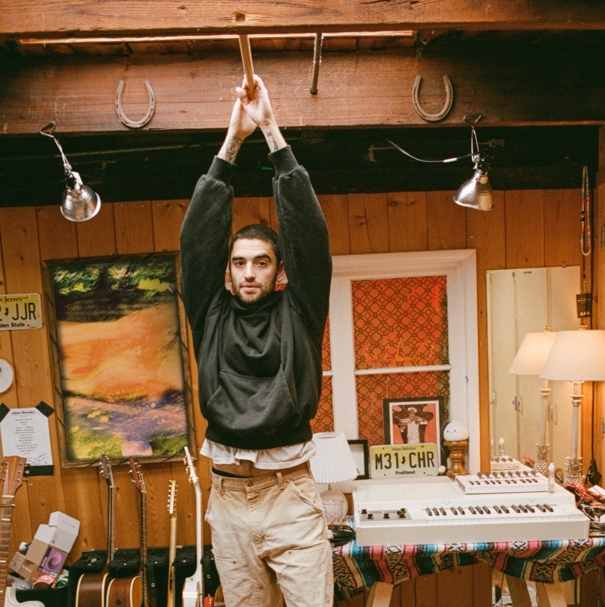

I
Build the weekly ritual
Sunday songs delivered direct to subscribers, every week.
THE LONG GAME
Adam Melchor writes emotionally specific, melody-forward songs and delivers them directly to fans through a weekly ritual that has run for years. His work is built to compound.
The System
One song per week. Delivered direct. Performed live. Archived forever.
~8,000 active playlist subscribers. 10,000+ community members. Growing (directional).

In 2020, Adam built the Melchor Lullaby Hotline — a weekly Sunday ritual where he wrote and sent a new song to a growing list of subscribers. Over 44 weeks, the list approached 10,000 people. That output became his debut project and established two things that are difficult to manufacture later: consistent output as an identity, and a direct-to-fan relationship tied to the act of writing, not just touring or content.
Sunday songs delivered direct to subscribers, every week.
Each track gets a live moment, tied to the same cadence.
The catalog grows weekly and stays accessible to late entrants.
The model is simple: write a song, send it to people who asked for it, perform it live, archive it. The song is the unit of relationship.





Lullaby Hotline launches
44 songs in 44 weeks
Approaching ~10,000 subscribers
Catalog development
4 releases in 4 years
200M+ Spotify streams (directional)
Vol. 2 launches
Weekly engine restarts
~8K playlist / 10K+ community (directional)
The arc is steady progression — no viral spike, no single-dependent trajectory. Each release expands the universe without abandoning what made him work.
Durability Signal
~227M total Spotify streams as of early 2026 (third-party tracker, directional). This is not a vanity number. It indicates a real, recurring audience.
No singer-songwriter currently owns the intersection of weekly creative output, direct fan delivery, and durable streaming scale. Adam operates in that space naturally.
Album-cycle releases with social content layered on top.
Fan relationship built on touring and content, not writing.
Output is episodic, with long gaps between drops.
The moment is the album release window.
The song is the unit of relationship, delivered weekly and directly.
Fan relationship is tied to the act of writing itself.
Output is continuous, and the practice is the identity.
The moment is every Sunday.
This positioning is especially compatible with the current environment where attention is fragmented, albums are harder to eventize, and the artists who keep their base tend to build repeatable rituals.
His songs are harmonically straightforward enough to be memorable, but emotionally specific enough to feel personal. That combination is what allows a weekly-output model to stay compelling.
Even on records with fuller arrangements, the vocal reads as close. That makes his music compatible with intimate delivery formats and also compatible with top-line writing, where a strong vocal demo can move a song forward quickly.
Voice memos and polished recordings coexisting means his creative identity survives across formats. He can generate usable material quickly, then decide later what becomes a master release vs. a pitch vs. an archive artifact.
Vol. 2 is the engine restarting — a weekly song, delivered direct, performed live, and archived as a growing body of work. The numbers confirm the audience was waiting.
Directional snapshot (early 2026):
~8,000
Active subscribers on the Untitled playlist
10,000+
Subscribers on community
Weekly
New song every Sunday
Live
Each song performed at a recurring live moment
Archived
Every song indexed and accessible
The system is designed to compound. Each week adds a new song to a living catalog that fans can enter at any point. There is no "you had to be there" — you just have to show up once, and the archive catches you up.
Unreleased Music
Vol. 2 is proof that the hotline model wasn't a pandemic novelty. It's Adam's native creative mode — and it scales.
Adam's audience skews toward listeners who value consistency over spectacle. They follow the writing, not the marketing cycle. The Lullaby Hotline trained them to expect a song every week and to treat each one as a small event — not content to be consumed, but a letter to be received.
The non-obvious upside: his community plus archive model compounds even when mainstream attention is elsewhere. Artists who last tend to have a dependable cadence fans can return to. Adam's identity is already built on that.